Gallery
Rendered images
Images rendered with my homemade 3D renderer GoLD_rayt. Click an image to enlarge it. Settings and technical details for each image are in the README on GitHub.
Spectral rendering: calculating light wavelength by wavelength
The same scenes drawn with the three colors of RGB, for comparison.

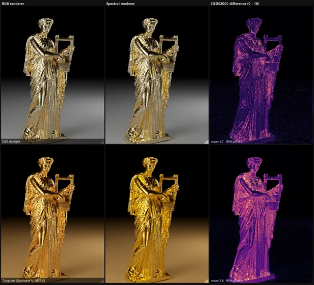
A gold statue, RGB vs. spectral
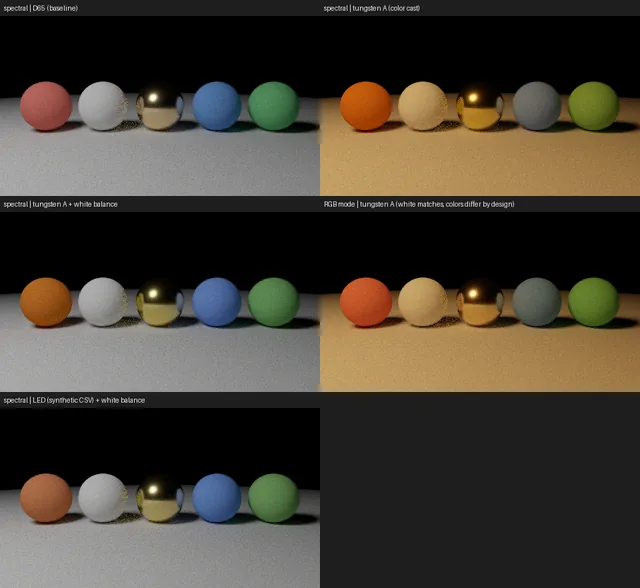
How object colors change when the light changes
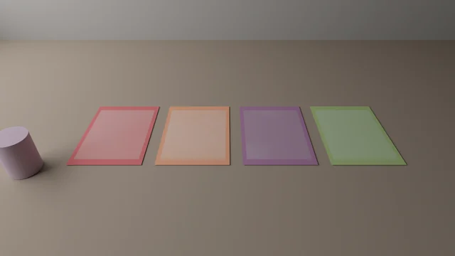
Faded paper: fading from measured data
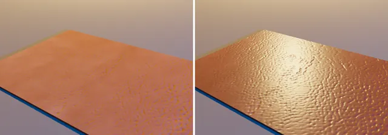
Measured cowhide: matte, and with a clear coat
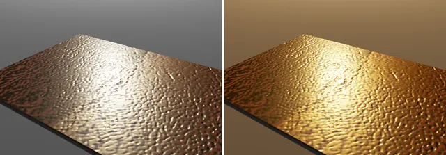
Leather with gold and silver leaf: two golds that look alike
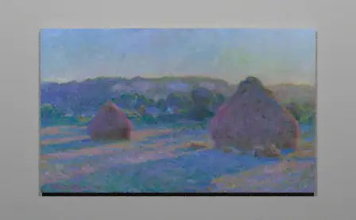
A painting whose light changes with the time of day: Monet's Stacks of Wheat
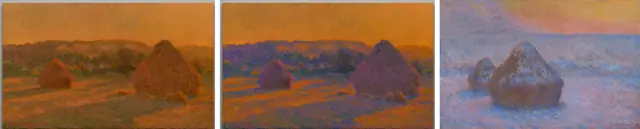
Evening light: one light, or the sun and the skyHow light travels: rainbow films, gathered light, translucency
Rainbow colors from a thin film, patterns made by bent light gathering, and light spreading inside objects.
 Soap bubble: rainbow colors from a thin film
Soap bubble: rainbow colors from a thin film
 A diamond ring
A diamond ring

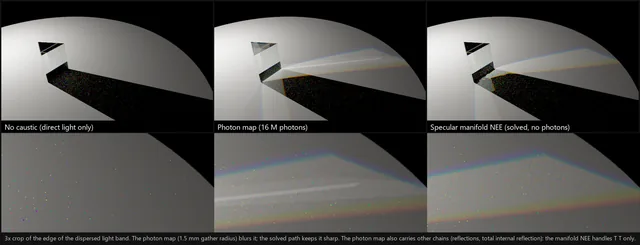
The pattern of light through a prism
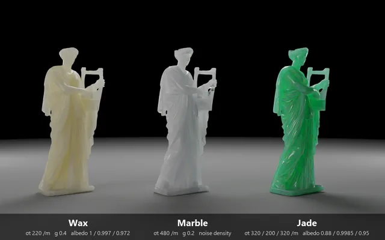
The same statue as wax, marble and jadeTracing light from the source: light in fog and haze
Drawn with a method (prototype) that follows the paths of light from the light source and connects them to the camera.
 A prism and a rainbow in fog
A prism and a rainbow in fog

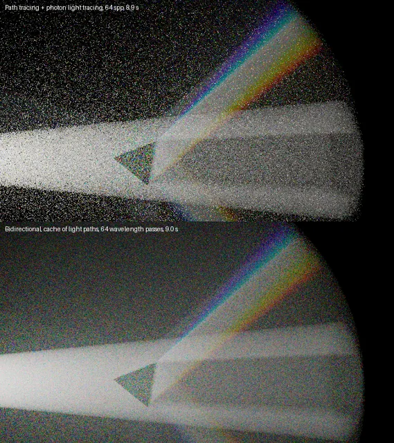
An equal-time comparison
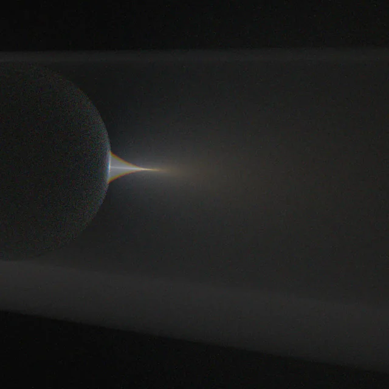
A glass ball in hazeSurface appearance: coated gloss and hair
Gloss from a clear coat over a base, and hair drawn fiber by fiber.

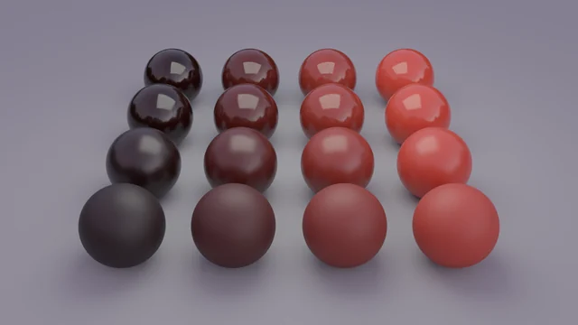
A grid of gloss: roughness and base brightness
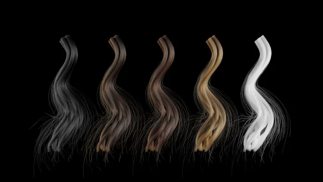
Hair color from melanin alone
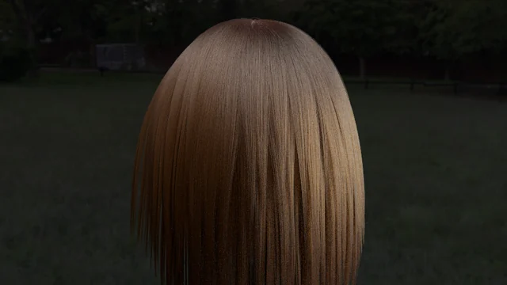
Hair falling over a headSkin
The fine relief of skin, and skin wet with water.


Camera: lenses, focus, bokeh and motion blur
Real lens designs and camera settings: the distortion, the range in focus, the blur, and the streaks of moving objects.